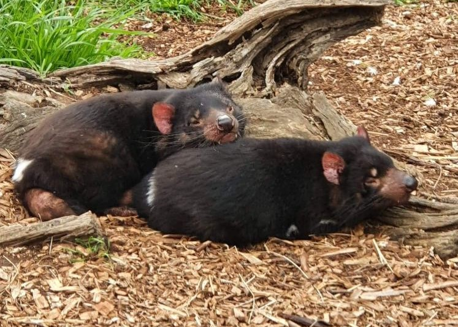
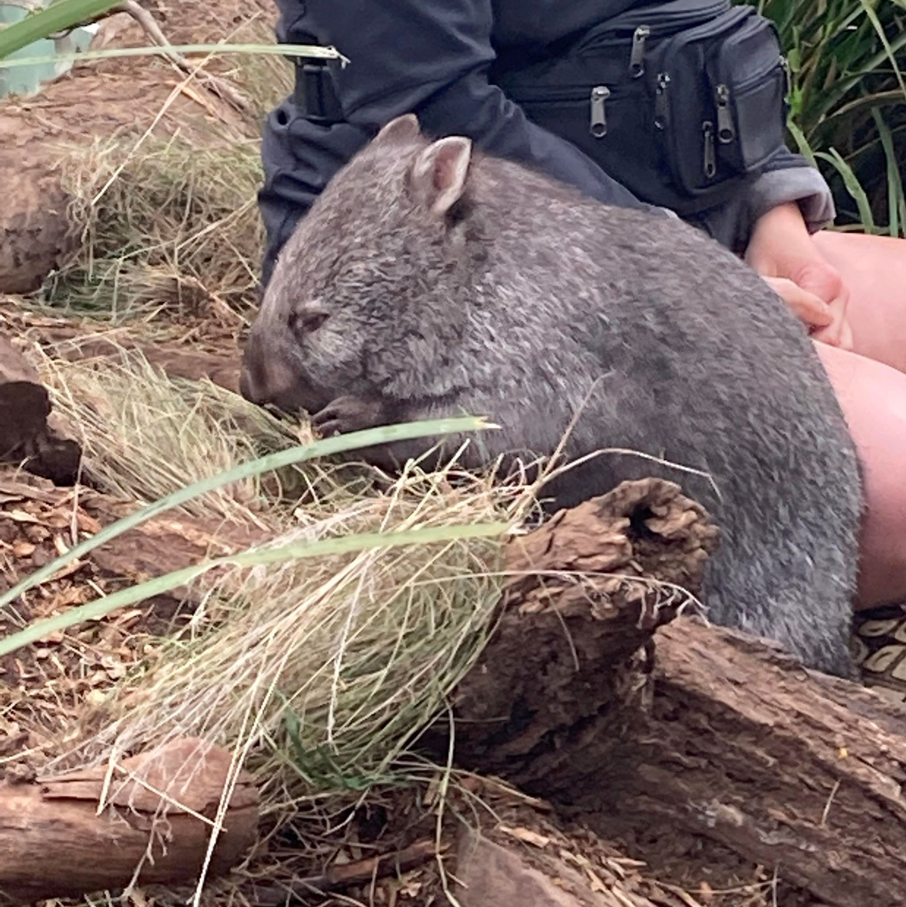
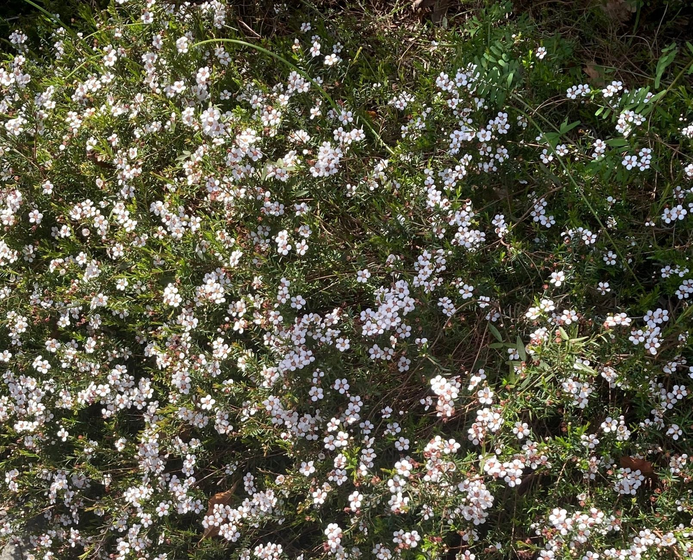
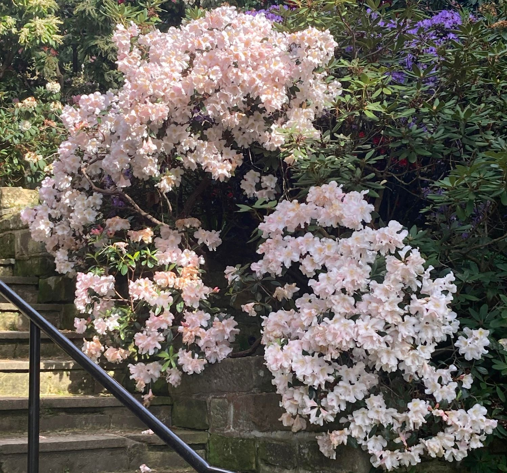

Welcome to my journal on Hobart! While exploring this area's beautiful nature, I kept a scrapbook of all
of the animals and plants that I came across, which you are reading now! Although my journey was a
challenge, it was very adventurous and I enjoyed my time
very much. Hopefully when you come and adventure, you will be able to find the amazing nature that I
have found and maybe discover something new as well!
Categories


This scrapbook's first category is Animals. Hobart is known for having lots of unique wildlife,
especially, the native Tasmanian Devils. It was very fun exploring different locations in Hobart and
discovering all these unique animals, and I hope you can join me on this adventure!
Animals


The second category is Plants. As Hobart is at the bottom of Australia, it has colder weather. This
means that this area has unique and fascinating plants to discover! I had some much fun exploring
Hobart's nature and I hope you can join me on this adventure!
Plants